SWeibull <- function(x,lambda,alpha){
exp(-lambda*x^(alpha))
}
ggplot()+
xlim(0,3)+
geom_function(fun = SWeibull,args= list(lambda = 2, alpha = 2))+
ylab('S')+
theme_bw()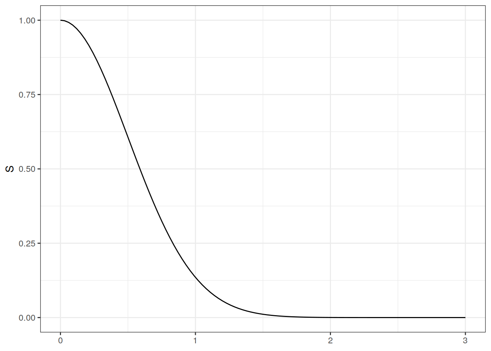
Sea \(X\) el tiempo de vida hasta un cierto evento. Por ejemplo, este evento puede ser la enfermedad, muerte de un individuo. O bien \(X\) puede denotar el tiempo hasta que falle una máquina bajo ciertas condiciones. Asimismo podemos pensar en que la variable \(X\) puede representar el tiempo de espera hasta que un ser humano nace desde su concepción.
En todos los casos anteriores, la variable aleatoria \(X\) comparte una característica en común: \(X\) es una variable aleatoria positiva. Recuerden que en el contexto de distribuciones de pérdidas, ya uds han hecho inferencia de modelos estadísticos de variables aleatorias positivas, pero en un contexto más actuarial y no tan demográfico.
Existen cuatro características de interés para describir la variable \(X\):
A continuación explicamos cada característica:
Definition 1.1 (Función de sobrevivencia) \[S(x)=P(X>x)\]
En un contexto de tiempo de vida de aparatos o máquinas, a la función \(S(x)\) también se le llama función de utilidad o fiabilidad.
Note que si \(X\) es una variable aleatoria continua entonces \(S(x)\) es una función monótona decreciente. Además, si \(f\) es la función de densidad de \(X\):
\[S(x)=1-F(x)=\int_x^{\infty} f(t)dt\] y por lo tanto: \[f(x)=-\frac{dS(x)}{dx}\]
En este caso \(S(x)=\exp(-\lambda x^{\alpha})\), para \(\lambda>0\) y \(\alpha>0\).
Note que si \(\alpha=1\) entonces \(X\sim \text{Exponencial}(\lambda)\).
A continuación se ilustra \(S(x)\) cuando \(\lambda=\alpha=2\):
SWeibull <- function(x,lambda,alpha){
exp(-lambda*x^(alpha))
}
ggplot()+
xlim(0,3)+
geom_function(fun = SWeibull,args= list(lambda = 2, alpha = 2))+
ylab('S')+
theme_bw()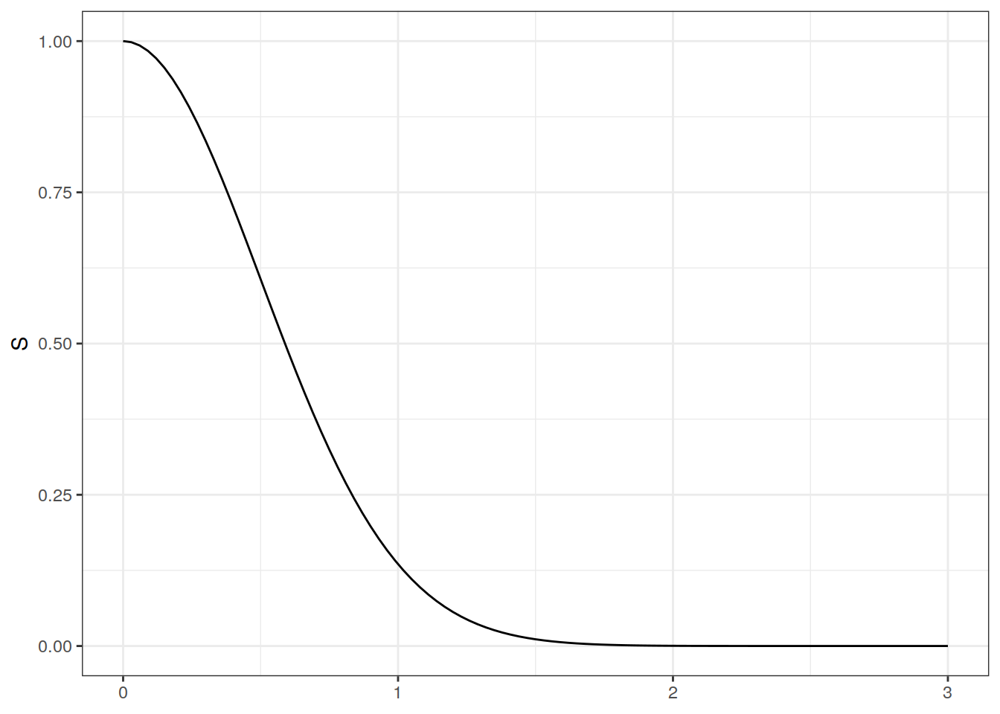
En términos generales \(S(0)=1\) y \(S(\infty)=0\), para cualquier función de sobrevivencia \(S\). Además, es importante recalcar que una tabla de vida o una tabla de decrementos en general es un estimador de \(S\) bajo un cierto conjunto de datos observados.
Note que en el caso discreto: \[S(x)=\sum_{x_j>x}p(x_j)\]
donde \(p(x_j)\) es la función de masa evaluada en \(x_j\).
Esta función se conoce en otros contextos con otros nombres:
Definition 1.2 (Función de riesgo) \[h(x)=\lim_{\Delta x\rightarrow 0}\frac{P[x\leq X < x+\Delta x|X\geq x]}{\Delta x}\]
En el caso en que \(X\) es una variable aleatoria continua: \[\begin{align*} h(x)&=\lim_{\Delta x\rightarrow 0}\frac{F(x+\Delta x)-F(x)}{\Delta x}\cdot \frac{1}{S(x)}\\ &=\frac{f(x)}{S(x)}=-\frac{d}{dx}\log (S(x)) \end{align*}\]
Si la función de riesgo se acumula en el intervalo \([0,x]\), se obtiene la función de riesgo acumulativo:
\[\begin{align*} H(x)=\int_0^xh(u)du&=-\int_0^x \frac{d}{du}\log(S(u))du\\ &=-\log(S(x)). \end{align*}\]Entonces: \[ S(x)=\exp[-H(x)]=\exp\left[-\int_0^th(u)du\right] \tag{1.1}\]
en donde a la expresión \(h(u)du\) dentro de la integral se le llama probabilidad instantánea del riesgo.
La función de riesgo \(h(x)\) necesita ser solamente positiva para asegurar de que la función de sobrevivencia esté bien definida. Por lo tanto no hay muchas restricciones en la forma que tiene la función de riesgo en \((0,\infty)\). Por ejemplo la función de riesgo es monótona creciente en la mayoría de situaciones en donde hay desgaste en las condiciones de existencia en seres o aparatos. También puede ser monótona decreciente en situaciones en donde el riesgo del evento disminuye conforme pasa el tiempo, por ejemplo en el caso de la mortalidad infantil. También se puede tener funciones de riesgo combinadas al tener episodios de riesgo creciente y después de un evento el riesgo disminuye hasta un cierto valor, por ejemplo cuando un paciente es intervenido en un momento de riesgo máximo y después se recupera disminuyendo su riesgo hasta un valor esperable.
En este caso la función de densidad es: \[f(x)=-\frac{dS(x)}{dx}=\lambda \alpha x^{\alpha-1}\exp(-\lambda x^{\alpha})\] entonces: \[h(x)= \lambda \alpha x^{\alpha-1}\] Note que si \(\alpha=1\) entonces \(h(x)=h\alpha\), si \(\alpha>1\) la función de riesgo es creciente y si \(\alpha<1\) es decreciente.
En el caso en que \(\alpha=\lambda=2\)
hWeibull <- function(x,lambda,alpha){
lambda*alpha*x^(alpha-1)
}
ggplot()+
xlim(0,3)+
geom_function(fun = hWeibull,args= list(lambda = 2, alpha = 2))+
ylab('h')+
theme_bw()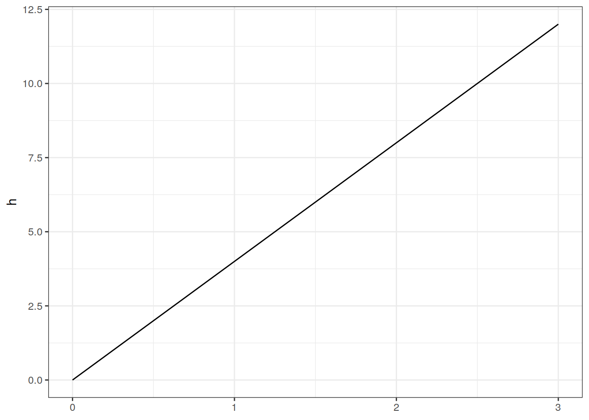
Para otro caso, ver ejemplo 2.2 del (Klein and Moeschberger 2003).
En el caso en que \(X\) es una variable aleatoria discreta: \[h(x_j)=P[X=x_j|X\geq x_j]=\frac{p(x_j)}{S(x_{j-1})}\] para \(j=1,2,\ldots\) y donde \(S(x_0)=1\). Como \(p(x_j)=S(x_{j-1})-S(x_j)\) entonces: \[h(x_j)=1-\frac{S(x_j)}{S(x_{j-1})}\]
Además:
\[\begin{align*} S(x)&=\prod_{x_j\leq x}\frac{S(x_j)}{S(x_{j-1})}\\ &=\prod_{x_j\leq x}[1-h(x_j)] \end{align*}\]Si \(p(x_j)=\frac 1 3\) para \(j=1,2,3\) entonces: \[S(x)=P(X>x)=
\begin{cases}
1 & 0\leq x <1\\
2/3 & 1\leq x <2 \\
1/3 & 2\leq x <3 \\
0 & x\geq 3
\end{cases}
\]
y \[h(x)=
\begin{cases}
1/3 & j=1 \\
1/2 & j=2 \\
1 & j=3
\end{cases}
\]
En términos generales la función de riesgo es más informativa que la función de sobrevivencia.
Siguiendo con el caso discreto: \[H(x)=\sum_{x_j\leq x}h(x_j)\] y la relación Equation 1.1 no aplica. Otros autores prefieren definir la función de riesgo acumulada: \[H(x)=-\sum_{x_j\leq x}\log(1-h(x_j))\] y en este caso la relación exponencial entre \(S(x)\) y \(H(x)\) sí se preserva. Note que si \(h(x_j)\approx 0\) entonces la definición anterior de \(H(x)\) es una aproximación de Taylor de la definición original.
En muchas aplicaciones se requiere una estimación del tiempo esperado en que el evento va a ocurrir, dadas las condiciones actuales:
Definition 1.3 (Vida Residual Media)
\[\begin{align*} mrl(x)&=E[X-x|X>x]=\frac{\int_x^{\infty}(t-x)f(t)dt}{S(x)}\\ &=\frac{\int_x^{\infty}S(t)dt}{S(x)} \end{align*}\]Cuando \(x=0\), entonces \(mrl(0)=\int_0^{\infty}S(t)dt=EX\). Por otro lado se puede comprobar (Ejercicio):
\[\begin{align*} \text{Var}(X)=2\int_0^{\infty}tS(t)dt-\left[\int_0^{\infty}S(t)dt\right]^2 \end{align*}\]Además a partir de la función de sobrevivencia, también se puede calcular el cuantil correspondiente:
Definition 1.4 (Cuantil-p) Mínimo \(x_p\) tal que \(S(x_p)\leq 1-p\): \[\inf\{t:S(t)\leq 1-p\}\] En el caso continuo: \(S(x_p)=1-p\).
Exponencial: Vida media \(\mu=EX=\frac 1 \lambda\). Vida mediana \(S(x_{0.5})=0.5\), entonces:
\[S(x_{0.5})=e^{-\lambda x_{0.5}}=\frac 1 2 \Rightarrow x_{0.5}=\frac{\log 2}{\lambda}\]
Vida media residual (usando la propiedad de pérdida de memoria): \[mrl(x)=E[X-x|X>x]=E[X]=\frac 1 \lambda\]
Weibull:: \[1-p=\exp(-\lambda x^{\alpha}_p)\Rightarrow x_p=\left[-\frac{\log(1-p)}{\lambda}\right]^{1/\alpha}\]
En el ejemplo desarrollado anteriormente, en donde \(\alpha=\lambda=2\):
alpha <- lambda <- 2
x_05 <- (-log(1-0.5)/lambda)^(1/alpha)
show(x_05)[1] 0.588705es la vida mediana bajo el supuesto Weibull.
En el caso discreto: \[mrl(x)=\frac{(x_{i+1}-x)S(x_i)+\sum_{j\geq i+1}(x_{j+1}-x_j)S(x_j)}{S(x)}\qquad \text{para }x_i\leq x<x_{i+1}\]
Además del caso Weibull, existen otras escogencias para modelar la función de sobrevivencia. Las más usuales son:
Recuerden además que en el caso exponencial se cumple la propiedad de pérdida de memoria: \(P(X\geq x+z|X\geq x)=P(X\geq z)\).
a los parámetros \(\lambda\) y \(\alpha\) se les llama de escala y forma respectivamente.
Bajo la transformación \(Y=\log X\) si \(X\sim Weibull\) se puede escribir \(Y=\mu+\sigma E\) donde \(\mu=\frac{-\log \lambda}{\alpha}\) y \(\sigma=\frac 1 \alpha\) y \(E\sim\) Valor Extremo Estándar, es decir: \[f_e(w)=e^{w-e^w}, \quad w\in \mathbb R\] y \[S_E(w)=e^{-e^w}\]
\(X\) es una LogNormal\((\mu,\sigma^2)\) si \(Y=\log X\sim N(\mu,\sigma^2)\). En este caso:
\[\begin{align*} S(x)&=1-\Phi\left(\frac{\log x-\mu}{\sigma}\right)\\ h(x)&=\frac{\phi(x)}{S(x)} \end{align*}\]En general la tasa de riesgo \(h(x)\) no es monótona, por ejemplo tomando \(\mu=0\) y \(\sigma=1\):
hLNormal <- function(x,mu,sigma){
dnorm(x)/plnorm(x,meanlog = mu,sdlog = sigma,lower.tail = F)
}
ggplot()+
xlim(0,3)+
geom_function(fun = hLNormal,args= list(mu = 0, sigma = 1))+
ylab('h')+
theme_bw()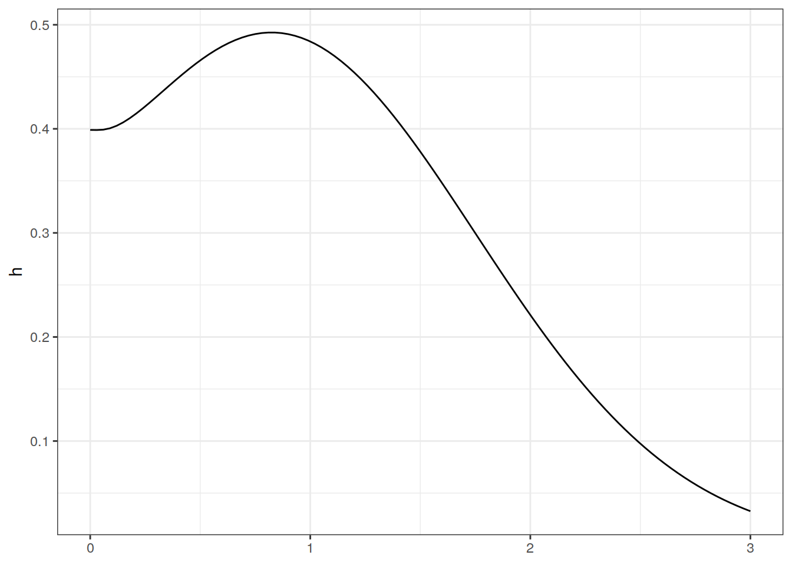
lo cual no necesariamente tiene sentido en muchas aplicaciones.
\(X\) es una variable aleatoria log-logística si \(Y=\log X\sim\) logístico: \[f_Y(y)=\frac{e^{\frac{y-\mu}{\sigma}}}{\sigma\left[1+e^{\frac{y-\mu}{\sigma}}\right]^2},\qquad y \in \mathbb R\]
con función de tasa y función de sobrevivencia:
\[\begin{align*} h(x)&=\frac{\alpha \lambda x^{\alpha-1}}{1+\lambda x^\alpha}\qquad \text{más flexible que Weibull}\\ S(x)&=\frac{1}{1+\lambda x^\alpha} \end{align*}\]con \(\alpha=\frac 1 \sigma>0\), \(\lambda=e^{-\mu/\sigma}\)
\[f(x)=\frac{\lambda^\beta x^{\beta-1}e^{-\lambda x}}{\Gamma(\beta)},\qquad \lambda,\beta,x>0\] Si \(\beta=1\): exponencial, \(\beta\longrightarrow \infty\): Normal. Además \(h(x)\) tiene una forma complicada (ver Klein) pero no es muy flexible (solamente crece o decrece).
en este caso si \(\alpha>1\) y \(\theta>0\) entonces \(h\) es monótona creciente. Además podemos generalizar levemente la ley anterior por medio del modelo de Makeham: \[h(x)=\theta \exp(\alpha x)+\lambda\]
la cual permite que \(h\) sea más flexible.
hGompertz <- function(x,alpha,theta,lambda){
theta*exp(alpha*x)+lambda
}
ggplot()+
xlim(0,3)+
geom_function(fun = hGompertz,args= list(alpha = 0.5, theta = 0.5,lambda = 0.2))+
ylab('h')+
theme_bw()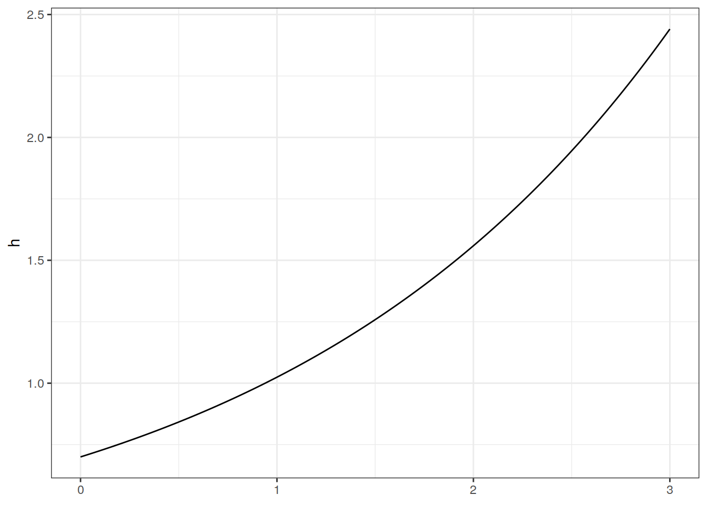
Sea \(X\) la variable aleatoria de tiempo de fallo u ocurrencia de riesgo. Usualmente la distribución de la variable \(X\) se asocia con variables explicativas o covariables:
\[Z^T=(Z_1,\ldots,Z_p)\]
donde estas covariables pueden ser cuantitativas o categóricas, y no se descarta la posibilidad de que estas dependan del tiempo \(x\):
\[Z^T(x)=(Z_1(x),\ldots,Z_p(x))\]
Usualmente los modelos de regresión en este contexto se definen de dos formas:
Enfoque 1
Usar la variable dependiente \(X\) como variable transformada según \(Y=\log(X)\) y hacer la regresión lineal múltiple:
\[Y=\mu+\gamma^TZ+\sigma \epsilon\]
donde \(\gamma^T=(\gamma_1,\ldots,\gamma_p)\) es un vector de coeficientes y \(\epsilon\) es un error independiente que se puede distribuir según:
Método de estimación: Máxima Verosimilitud.
Sea \(S_0(x)\) la función de sobrevivencia de \(X=e^Y\) cuando \(Z=0\), es decir es la función de sobrevivencia de \(\exp(\mu+\sigma \epsilon)\). Entonces:
\[\begin{align*} P[X>x|Z]&=P[Y>\log x|Z]=P[\mu+\gamma^TZ+\sigma \epsilon>\log x|Z]\\ &=P[\exp(\mu+\sigma \epsilon)>x\exp(-\gamma^T Z)|Z]=S_0(x\exp(-\gamma^T Z)). \end{align*}\]Conclusión: el efecto de las covariables \(Z\) en la función de sobrevivencia de \(X\) es el escalamiento del tiempo \(x\) a través del factor \(\exp(-\gamma^T Z)\). Por este motivo a este modelo se le llama modelo de tiempo de fallo acelerado. Su función de riesgo es (ejercicio): \[h(x|Z)=h_0\left[x\exp(-\gamma^T Z)\right]\exp(-\gamma^T Z)\]
Sea \(X\sim Weibull(\lambda, \alpha)\). Si \(Y=\log X\) entonces \(Y=\mu+\sigma W\) donde \(\mu=-\frac{\log \lambda}{\alpha}\), \(\sigma=\frac 1 \alpha\) y \(W\sim \text{VE-Standard}\), es decir: \[f_W(w)=\exp\left(w-e^w\right)\qquad w\in \mathbb R\]
Si \(Z_1=1\) en el vector de covariables \(Z\), entonces bajo el modelo de regresión Weibull, se puede calcular:
\[\begin{align*} S_Y(y|Z)&=P[Y>y|Z]=P\left[W>\frac{y-\gamma^T Z}{\sigma}|Z\right]\\ &=\exp\left[-\exp\left[\frac{y-\gamma^T Z}{\sigma}\right]\right] \end{align*}\]y cambiando a la variable original \(X\):
\[\begin{align*} S_X(x|Z)&=\exp\left[-\exp\left[\frac{\log x-\gamma^T Z}{\sigma}\right]\right]=\exp\left[-x^{1/\sigma}\exp\left[-\frac{\gamma^T Z}{\sigma}\right]\right]\\ &=\exp\left[-\left[x\exp(-\gamma^T Z)\right]^\alpha\right]=S_0(x\exp(-\gamma^T Z)) \end{align*}\] donde \(S_0\) es la función de sobrevivencia Weibull.
Enfoque 2
Modelación de la tasa de riesgo condicional
En este enfoque se trabaja con dos tipos de modelos:
\[ h(x|Z)=h_0(x)c(\beta^T Z) \tag{1.2}\]
donde \(h_0\) puede ser una función paramétrica o arbitraria y \(c\) es una función arbitraria no-negativa. Cuando
\[c(\beta^T Z)=\exp(\beta^T Z)\]
al modelo en Equation 1.2 se le llama Modelo de Cox. Para este último modelo, si existe dos individuos con distinto conjunto de covariables \(Z_1\) y \(Z_2\). Entonces:
\[\frac{h(x|Z_1)}{h(x|Z_2)}=\frac{c(\beta^TZ_1)}{c(\beta^TZ_2)}\]
lo cual es independiente de \(x\) (propiedad de riesgos proporcionales). Además, note que
\[\begin{align*} S(x|Z)&=\exp\left[-\int_0^xh(u|Z)du\right]=\exp\left[-c(\beta^T Z)\int_0^xh_0(u)du\right]\\ &=S_0(x)^{c(\beta^T Z)}. \end{align*}\]En el caso Weibull: \(h_0(x)=\alpha \lambda x^{\alpha-1}\) y la función de riesgo condicional en el caso de un modelo de Cox es: \[h(x|Z)=\alpha \lambda x^{\alpha-1}\exp(\beta^T Z)\]
Note que en este caso: \[\begin{align*}
S(x|Z)&=S_0(x)^{c(\beta^T Z)}\\
&=\exp[-\lambda (x\exp(\beta^T Z/\alpha))^\alpha]=S_0(x\exp(\beta^T Z/\alpha))
\end{align*}\]
por lo cual el modelo de regresión Weibull se puede expresar como modelo de tiempo de fallo acelerado o bien como modelo de riesgos proporcionales. (único caso)
Este tipo de modelo tiene dificultades extra, por ejemplo los parámetros \(\beta_j(x)\) deben ser seleccionados de manera que la tasa de riesgo \(h(x|Z)\) sea positiva. Por otro lado también \(\beta_j(x)\) puede depender del tiempo \(x\).
Si \(T\) denota el tiempo de fallo o bien el tiempo hasta que ocurre un evento. En este contexto, puede ser que existan \(K\) distintas causas del fallo. Por ejemplo, ante el evento de muerte a los 65 años, esta se puede deber a muchas causas.
Sea \(X_i\) el tiempo hasta que ocurra el \(i\)-ésimo riesgo en competencia. Sea \(T=\min(X_1,\ldots,X_K)\) y considere la variable \(\delta\) que asume el valor \(i\) si \(T=X_i\). Definimos la tasa del riesgo \(i\)-ésimo como:
\[\begin{align*} h_i(t)&=\lim_{\Delta t\rightarrow 0}\frac{P[t\leq T < t+\Delta t, \delta=i|T\geq t]}{\Delta t}\\ &=\lim_{\Delta t\rightarrow 0}\frac{P[t\leq X_i < t+\Delta t|X_j\geq t, \quad j=1,\ldots,K]}{\Delta t} \end{align*}\]Entonces, si \(S(t_1,\ldots,t_K)=P[X_1>t_1,\ldots,X_K>t_K]\)
\[\begin{align*} h_T(t)=\sum_{i=1}^Kh_i(t) \quad \text{y} \quad h_i(t)=\frac{-\frac{\delta}{\delta t_i}S(t_1,\ldots,t_k)|_{t_1=\cdots=t_K=t}}{S(t,\ldots,t)} \end{align*}\]Caso especial: si los \(K\) riesgos en competencia son independientes:
\[h_i(t)=\frac{-\frac{\delta}{\delta t_i}\prod_{j=1}^KS_j(t_j)|_{t_1=\cdots=t_K=t}}{\prod_{j=1}^KS_j(t)}=\frac{-\frac{\delta}{\delta t_i}S_i(t_i)|_{t_i=t}}{S_i(t)}\]
En el caso no independiente (ver Ejemplo 2.7 del Klein).
Nota: es fundamental hacer algún supuesto sobre la estructura de dependencia en los tiempos de fallo, ya que al acontecer el riesgo en una causa especifica no se observó el tiempo de fallo en los riesgos restantes.
En el contexto de riesgos en competencia, no siempre se utiliza la tasas de riesgo para sintetizar la información, sino que también se utiliza probabilidades con distinta interpretación:
Se calculan a través de la función de incidencia acumulativa:
\[\begin{align*} F_i(t)&=P[T\leq t, \delta = i]\\ &=\int_0^th_i(u)\exp[-H_T(u)]du \end{align*}\]donde el último término exponencial es la tasa acumulativa de todos los riesgos en competencia. Note que \(F_i\) no es una distribución ya que:
\[F_i(\infty)=P[\delta = i]\neq 1\]
Al aplicar la función \(F_i\) se puede calcular las probabilidades crudas directamente.
\[S_i(t)=S(0,\ldots,0,\stackrel{\text{posicion }i}{t},0,\ldots,0)\]
En el caso independiente:
\[\begin{align*} S_i(t)&=\exp(0)\cdots \exp\left(-\int_0^th_i(u)du\right)\cdots \exp(0)\\ &=\exp\left[-\int_0^t\frac{dF_i(u)}{S_T(u)}du\right] \end{align*}\]\[T^J=\min(X_i,i\in J)\quad \text{y} \quad F_i^J(t)=P[T^J\leq t,\delta=i]\]
para \(i \in J\). Definimos la tasa de riesgo cruda parcial:
\[\lambda_i^J=\frac{-\frac{\delta S(t_1,\ldots,t_K)}{\delta t_i}\Big \vert_{t_j=t, j\in J; t_j=0, j\in J^C}}{S(t_1,\ldots,t_K)\Big \vert_{t_j=t, j\in J; t_j=0, j\in J^C}}\]
Entonces:
\[F_i^J(t)=P[T^J\leq t, \delta=i]=\int_0^t\lambda^J_i(x)\exp\left[-\sum_{j\in J}\int_0^t\lambda_j^J(u)du\right]dx\]
Note que en el caso independiente, la tasa de riesgo cruda parcial es:
\[\lambda_i^J(t)=\frac{dF_i(t)/dt}{S_T(t)}\]
Conceptos de censura y truncamiento:
Definition 1.5 (Censura) Información de sobrevivencia de un individuo, que solamente se conoce con respecto a un intervalo y no a un punto fijo de occurrencia del evento de riesgo.
Definition 1.6 (Truncamiento) Restricción de entrada o salida a un estudio de sobrevivencia.
También conocida como Censura Tipo I:
Definition 1.7 (Censura Tipo I) Evento de interés es observado solamente si ocurre antes de un tiempo específico.
Recordando la notación que hemos usando hasta el momento, si \(X\) es el tiempo aleatorio en que ocurre el riesgo, \(X\sim f(x)\) con función de sobrevivencia \(S(x)\) y además \(C_r\) denota el tiempo de censura fijo, entonces \(X\) es observado solamente si \(X\leq C_r\) y si \(X>C_r\) decimos que el evento es “censurado”.
En este caso los datos pueden ser representados en pares:
\[(T,\delta)\]
donde \(\delta=1\) indica que el evento se observa y \(\delta=0\) indica que el evento es censurado. Además \(T=\min(X,C_r)\).
En un estudio clínico, hay una serie de ratones alimentados con un agente cancerígeno. Se rastrea el tiempo de vida en cada ratón, hasta la muerte o bien hasta una censura pre-establecida (sacrificio):
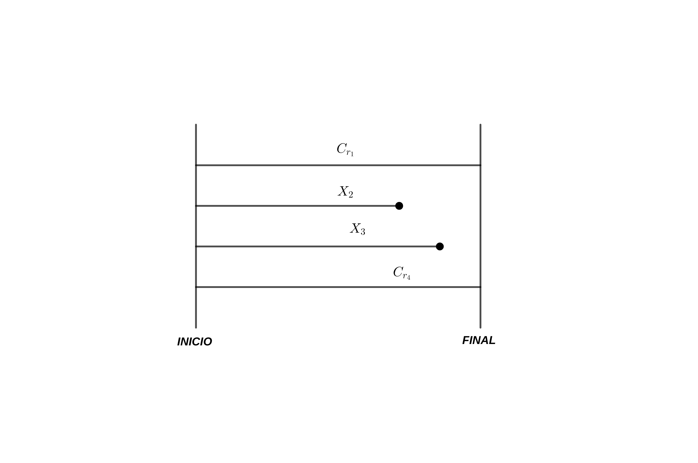
También se puede dar el caso de que el tiempo de censura entre observaciones no sea único (censura progresiva):
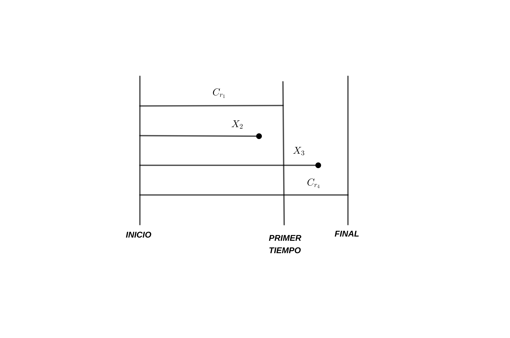
También se puede dar el caso de que no todos los sujetos de prueba (ratones) estuvieron al inicio del estudio (Censura Tipo I-generalizada):
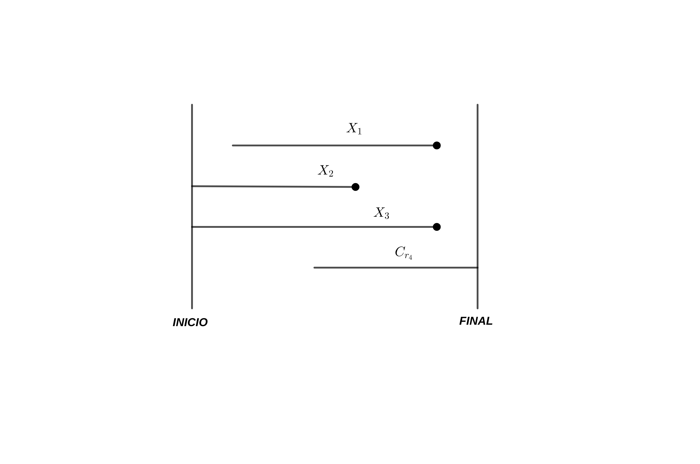
Otra forma de representar los tiempos de sobrevivencia y censura en una muestra es a través de un Diagrama de Lexis, en donde se representa en el eje x el tiempo transcurrido (calendario) del estudio y en el eje y el tiempo transcurrido de cualquier individuo en el estudio:
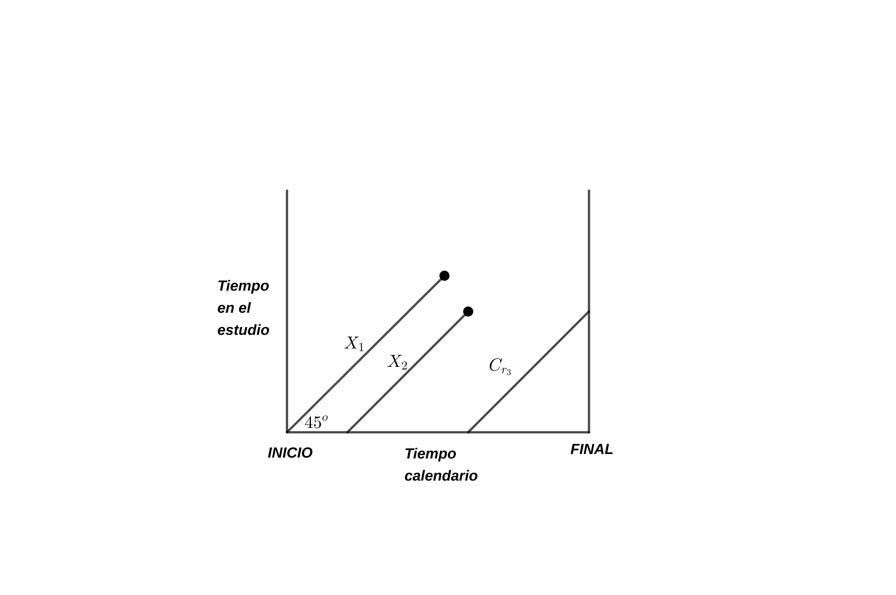
Otro tipo de esquema de censura por la derecha es la Censura Tipo II: en donde un estudio termina cuando fallan los primeros \(r\) individuos en un grupo de \(n\) individuos. Este tipo de esquema se suele aplicar en lotes de equipo electrónico por ejemplo o sistemas que están conectados en red. En este caso \(r\): número de fallos, \(n-r\): número de censuras y \(T_{(r)}\): tiempo de censura del estudio.
También se puede utilizar un esquema progresivo para la censura tipo II. Suponga que hay \(r_1\) fallos de un total de \(n\) individuos. Además asuma que se censuran \(n_1-r_1\) individuos (\(n_1<n\)) con un primer tiempo de censura \(T_{(r_1)}\). El proceso puede continuar con los \(n-n_1\) individuos restantes, ocurre \(r_2\) fallos (\(r_2<n-n_1\)), \(n_2-r_2\) censuras (\(n_1+n_2<n\)) y \(T_{(n_1+r_2)}\) es el segundo tiempo de censura y así sucesivamente.
Suponga que para un tiempo de vida \(X\) existe un tiempo \(C_\ell\) en donde el evento de riesgo ocurrió antes de que el sujeto fuera observado. En este caso el tiempo \(X\) es observado si \(X>C_\ell\). Al igual que en el caso de censura por la derecha, podemos usar la notación:
\[(T,\epsilon)\]
donde \(T=X\) si \(\epsilon=1\) (observado) y \(T=C_\ell\) si \(\epsilon=0\) (censurado), es decir \(T=\max(X,C_\ell)\). Por ejemplo, si un estudio busca cuantificar el riesgo de fumar marihuana por primera vez (Klein and Moeschberger 2003), un individuo tendría una censura por la izquierda si no recuerda la primera vez que fumó, pero afirma que sí la ha consumido antes del inicio del estudio.
Si por otro lado se combina la censura por la derecha y por la izquierda, se denomina censura doble, y en este caso los datos son:
\[(T,\delta)\quad \text{donde} \quad T=\max\left(\min(X,C_r),C_\ell\right)\]
y
\[\begin{align*} \delta=\begin{cases} 1 & \text{si $T$ ocurre entre $C_\ell$ y $C_r$}\\ 0 & \text{censura por la derecha}\\ -1 & \text{censura por la izquierda} \end{cases} \end{align*}\]Finalmente, la censura por intervalo se utiliza en estudios en donde un paciente o individuo en general es visitado periódicamente y lo único que se sabe es que el evento de interés ocurrió en un intervalo \((L_i,R_i]\) cuyos extremos corresponde a los momentos de visitas consecutivas.
El truncamiento ocurre cuando en un estudio solamente se incluyen y observan individuos cuyos eventos ocurren en \((Y_L,Y_R)\). Si el evento ocurriera fuera de ese intervalo entonces no se incluye en el estudio.
Si \(Y_R=\infty\) entonces X es observado \(\Leftrightarrow Y_L<X\) (truncamiento por la izquierda). Por ejemplo: (1) si se estudia la aparición de una enfermedad desde una fecha fija o (2) si se estudia el evento de muerte desde el inicio de un estudio clínico.
Nota: Muchas veces el truncamiento por la izquierda es acompañado con censura por la derecha.
Para el caso de truncamiento por la derecha: si \(Y_L=0\): \(X\) es observado \(\Leftrightarrow X\leq Y_R\) (ver Ejemplo 3.8 del (Klein and Moeschberger 2003)).
Supuesto: tiempos de ocurrencia de evento y tiempos de censura son independientes. Cada tipo de censura/truncamiento aporta distintos factores a la verosimilitud completa de los datos:
Tiempo exacto del evento en estudio: \(f(x)\)
Censura por la derecha: \(P(X>C_r)=S(C_r)\)
Censura por la izquierda: \(P(X<C_\ell)=1-S(C_\ell)\)
Censura en intervalo: \(P(L<X<R)=S(L)-S(R)\)
Truncamiento por la izquierda: \(f(x|X>Y_L)=\frac{f(x)}{S(Y_L)}\)
Truncamiento por la derecha: \(f(x|X<Y_R)=\frac{f(x)}{1-S(Y_R)}\)
Por lo tanto la verosimilitud con datos censurados se puede escribir como:
\[L\propto \prod_{i \in D}f(x_i)\prod_{i \in R}S(C_r)\prod_{i \in L}\left(1-S(C_\ell)\right) \prod_{i \in I}[S(L_i)-S(R_i)]\]
donde
\(D\): conjunto de eventos observables.
\(R\): conjunto de observaciones con censura por la derecha.
\(L\): conjunto de observaciones con censura por la izquierda.
\(I\): conjunto de observaciones con censura por intervalo.
Para datos truncados por la izquierda y censurados por la derecha con intervalo de truncamiento \((Y_{L_i},Y_{R_i})\) independientes del \(i\)-ésimo momento de muerte, se reemplaza \(f(x_i)\) y \(S(C_i)\) (\(C_i\): tiempo de censura \(i\)-ésima) por:
\[\frac{f(x_i)}{S(Y_{L_i})-S(Y_{R_i})} \quad \text{y} \quad \frac{S(C_i)}{S(Y_{L_i})-S(Y_{R_i})}\]
En el caso en donde cada individuo tiene una distribución de riesgo distinta (Ejemplo: regresión):
\[L\propto \prod_{i \in D}f_i(x_i)\prod_{i \in R}S_i(C_r)\prod_{i \in L}\left(1-S_i(C_\ell)\right) \prod_{i \in I}[S_i(L_i)-S_i(R_i)]\]
Caso particular: censura tipo I (por la derecha)
Si \(\delta=0\) (censura):
\[\begin{align*} P[T,\delta=0]&=P[T=C_r|\delta=0]P[\delta=0]=P[\delta=0]\\ &=P[X>C_r]=S(C_r). \end{align*}\]Si \(\delta = 1\):
\[\begin{align*} P[T,\delta=1]&=P[T=X|\delta=1]P[\delta=1]\\ &=P[T=X|X\leq C_r]P[X\leq C_r]\\ &=\frac{f(t)}{1-S(C_r)}[1-S(C_r)]=f(t). \end{align*}\]Entonces el aporte de \(T=t\) a la verosimilitud es:
\[[f(t)]^\delta[S(t)]^{1-\delta}\]
Si se tiene una muestra aleatoria de pares \((T_i,\delta_i)\), para \(i=1,\ldots,n\):
\[L=\prod_{i=1}^nf(t_i)^{\delta_i}[S(t_i)]^{1-\delta_i}\]
Como \(f(t_i)=h(t_i)S(t_i)\) entonces:
\[L=\prod_{i=1}^nh(t_i)^{\delta_i}S(t_i)^{\delta_i}[S(t_i)]^{1-\delta_i}=\prod_{i=1}^nh(t_i)^{\delta_i}\exp(-H(t_i))\]
Asuma que \(X\sim \text{Exponencial}(\lambda)\) con \(f(x)=\lambda \exp(-\lambda x)\), entonces:
\[\begin{align*} L&=\prod_{i=1}^n [\lambda \exp(-\lambda t_i)]^{\delta_i}[\exp(-\lambda t_i)]^{(1-\delta_i)}\\ &=\lambda^r\exp(-\lambda S_T) \end{align*}\]donde \(r=\sum \delta_i\) (total de eventos observados) y \(S_T=\sum_{i=1}^n t_i\) (total de tiempo en el estudio).
library(tidyverse)
library(KMsurv)Ensayo clínico de un fármaco, 6-mercaptopurina (6-MP), frente a un placebo en 42 niños con leucemia aguda. El ensayo se llevó a cabo en 11 hospitales estadounidenses. Se seleccionaron pacientes que habían experimentado una remisión completa o parcial de su leucemia inducida por el tratamiento con el fármaco prednisona. (Una remisión completa o parcial significa que la mayoría o todos los signos de la enfermedad habían desaparecido de la médula ósea). El ensayo se realizó emparejando pares de pacientes en un hospital determinado por estado de remisión (completa o parcial) y aleatorizando dentro del par para recibir terapia de mantenimiento con 6-MP o placebo. Los pacientes fueron seguidos hasta que su leucemia regresó (relapse) o hasta el final del estudio (en meses).
data("drug6mp")
#help("drug6mp")
glimpse(drug6mp)Rows: 21
Columns: 5
$ pair <int> 1, 2, 3, 4, 5, 6, 7, 8, 9, 10, 11, 12, 13, 14, 15, 16, 17, 18,…
$ remstat <int> 1, 2, 2, 2, 2, 1, 2, 2, 2, 2, 2, 1, 2, 2, 2, 1, 1, 2, 2, 2, 2
$ t1 <int> 1, 22, 3, 12, 8, 17, 2, 11, 8, 12, 2, 5, 4, 15, 8, 23, 5, 11, …
$ t2 <int> 10, 7, 32, 23, 22, 6, 16, 34, 32, 25, 11, 20, 19, 6, 17, 35, 6…
$ relapse <int> 1, 1, 0, 1, 1, 1, 1, 0, 0, 0, 0, 0, 0, 1, 0, 0, 1, 1, 0, 0, 0ggplot()+geom_histogram(data = drug6mp,mapping = aes(t2),bins = 6,fill='white',col = 'black')+
theme_bw()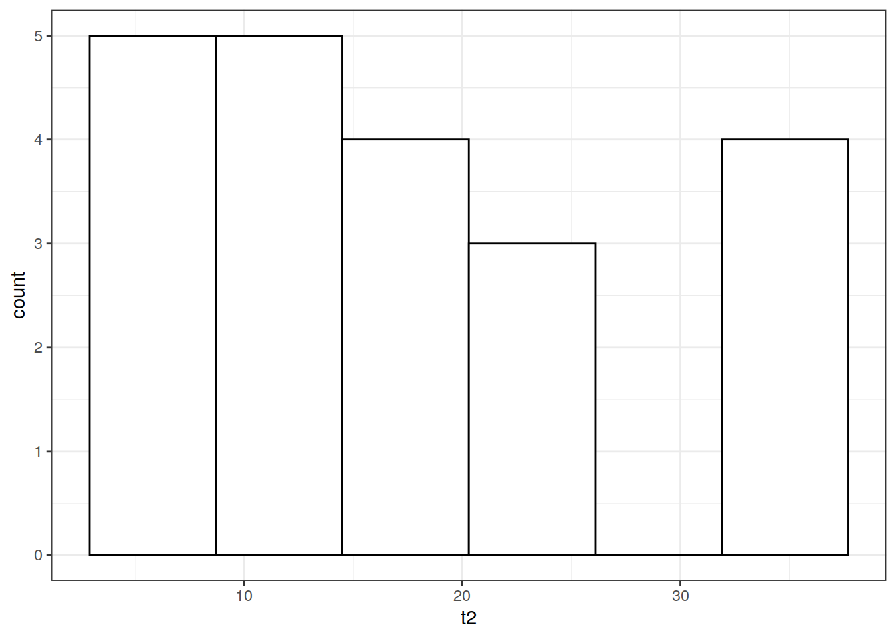
table(drug6mp$relapse)
0 1
12 9 Evaluación del tiempo hasta la primera infección del sitio de salida (en meses) en pacientes con insuficiencia renal, 43 pacientes utilizaron un catéter colocado quirúrgicamente (Grupo 1), y 76 pacientes utilizaron una colocación percutánea de su catéter (Grupo 2).
data(kidney)
#help(kidney)
glimpse(kidney)Rows: 119
Columns: 3
$ time <dbl> 1.5, 3.5, 4.5, 4.5, 5.5, 8.5, 8.5, 9.5, 10.5, 11.5, 15.5, 16.5, …
$ delta <int> 1, 1, 1, 1, 1, 1, 1, 1, 1, 1, 1, 1, 1, 1, 1, 0, 0, 0, 0, 0, 0, 0…
$ type <int> 1, 1, 1, 1, 1, 1, 1, 1, 1, 1, 1, 1, 1, 1, 1, 1, 1, 1, 1, 1, 1, 1…ggplot()+geom_histogram(data = kidney,mapping = aes(time),bins = 6,fill='white',col = 'black')+
theme_bw()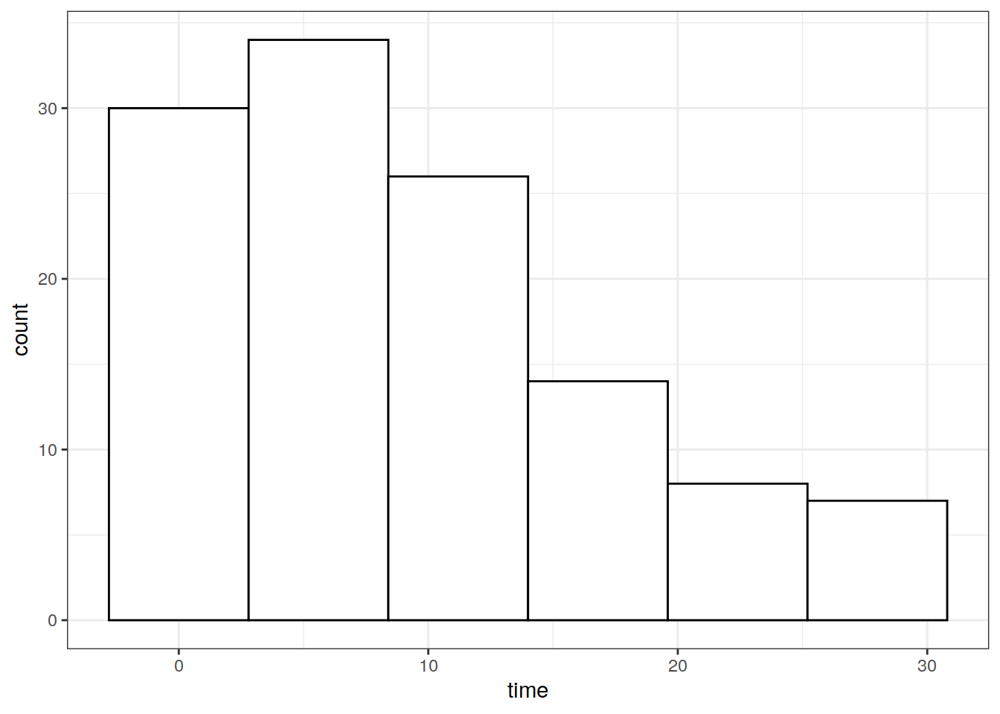
table(kidney$delta)
0 1
93 26 Estudio diseñado para determinar si las pacientes con cáncer de mama, clasificadas originalmente como negativas en los ganglios linfáticos por microscopía de luz estándar (SLM), podrían ser clasificadas de manera más precisa mediante examen inmunohistoquímico (IH) de sus ganglios linfáticos con un cóctel de anticuerpos monoclonales anticitokeratina. Se seleccionaron 45 pacientes con cáncer de mama femenino y ganglios linfáticos axilares negativos y un seguimiento mínimo de 10 años del Registro de Cáncer de los Hospitales de la Universidad Estatal de Ohio. De las 45 pacientes, 9 fueron positivas para inmunoperoxidasa, y las 36 restantes permanecieron negativas.
data(btrial)
#help(btrial)
glimpse(btrial)Rows: 45
Columns: 3
$ time <int> 19, 25, 30, 34, 37, 46, 47, 51, 56, 57, 61, 66, 67, 74, 78, 86, …
$ death <int> 1, 1, 1, 1, 1, 1, 1, 1, 1, 1, 1, 1, 1, 1, 1, 1, 0, 0, 0, 0, 0, 0…
$ im <int> 1, 1, 1, 1, 1, 1, 1, 1, 1, 1, 1, 1, 1, 1, 1, 1, 1, 1, 1, 1, 1, 1…tabla_1 <- btrial %>% group_by(death,im) %>% summarise(total = n()) %>%
ungroup() %>% mutate(total = round(total / sum(total)*100,2))`summarise()` has grouped output by 'death'. You can override using the
`.groups` argument.show(tabla_1)# A tibble: 4 × 3
death im total
<int> <int> <dbl>
1 0 1 44.4
2 0 2 2.22
3 1 1 35.6
4 1 2 17.8 tabla_2 <- btrial %>% group_by(death,im) %>% summarise(total = round(mean(time),2)) `summarise()` has grouped output by 'death'. You can override using the
`.groups` argument.show(tabla_2)# A tibble: 4 × 3
# Groups: death [2]
death im total
<int> <int> <dbl>
1 0 1 148.
2 0 2 144
3 1 1 52.1
4 1 2 59.9Muestra de 101 pacientes con leucemia mieloide aguda avanzada reportados en el Registro Internacional de Trasplante de Médula Ósea. 51 de estos pacientes recibieron un trasplante autólogo de médula ósea en el que, después de altas dosis de quimioterapia, su propia médula fue reinfundida para reemplazar su sistema inmunológico destruido. 50 pacientes recibieron un trasplante alogénico de médula ósea en el que se utilizó médula de un hermano compatible en cuanto a antígenos leucocitarios humanos (HLA) para reponer sus sistemas inmunológicos. Una pregunta importante en el trasplante de médula ósea es la comparación de la efectividad de estos dos métodos de trasplante medida por la duración de la supervivencia libre de leucemia de los pacientes, el tiempo que viven y cuánto tiempo permanecen libres de enfermedad después de sus trasplantes.
data("alloauto")
#help("alloauto")
glimpse(alloauto)Rows: 101
Columns: 3
$ time <dbl> 0.030, 0.493, 0.855, 1.184, 1.283, 1.480, 1.776, 2.138, 2.500, 2…
$ type <int> 1, 1, 1, 1, 1, 1, 1, 1, 1, 1, 1, 1, 1, 1, 1, 1, 1, 1, 1, 1, 1, 1…
$ delta <int> 1, 1, 1, 1, 1, 1, 1, 1, 1, 1, 1, 1, 1, 1, 0, 1, 0, 0, 1, 0, 1, 1…alloauto <- alloauto %>% mutate(type = factor(type))
ggplot()+geom_histogram(data = alloauto,aes(x = time),bins = 7,fill='white',col = 'black')+
facet_wrap(facets = vars(type),nrow = 2)+
theme_bw()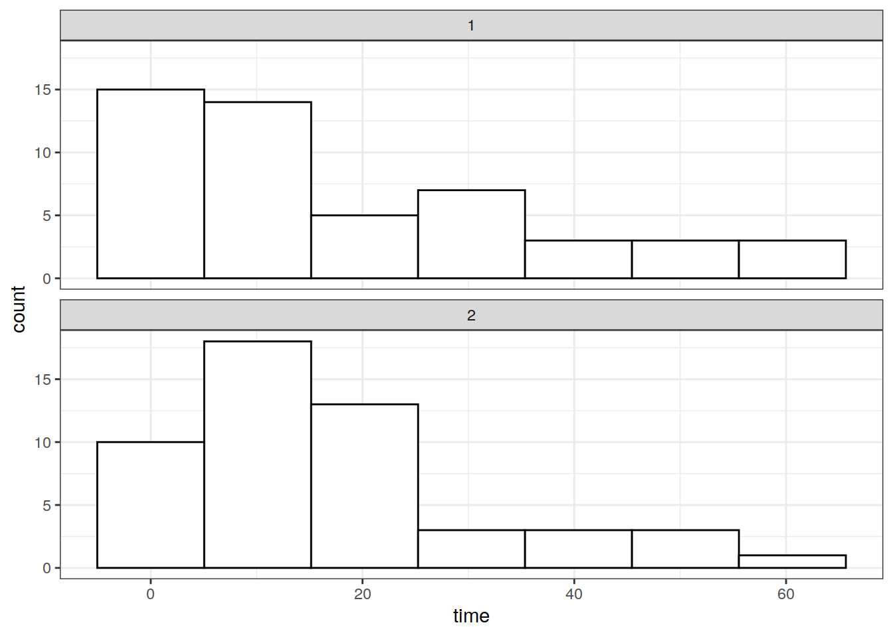
library(asaur)
head(gastricXelox) timeWeeks delta
1 4 1
2 8 1
3 8 1
4 8 1
5 9 1
6 11 1dim(gastricXelox)[1] 48 2Este es un ensayo clínico de Fase II (muestra única) de quimioterapia Xeloda y oxaliplatino (XELOX) administrado antes de la cirugía a 48 pacientes con cáncer gástrico avanzado con metástasis en los ganglios linfáticos paraaórticos (Wang et al.).
timeWeeks: tiempo de sobrevivencia en semanas.
delta: variable de censura: (1) muerte, (2) censura.
head(prostateSurvival) grade stage ageGroup survTime status
1 mode T1c 80+ 18 0
2 mode T1ab 75-79 23 0
3 poor T1c 75-79 37 0
4 mode T2 70-74 27 0
5 mode T1c 70-74 42 0
6 poor T2 75-79 38 2dim(prostateSurvival)[1] 14294 5Datos simulados de 14,294 pacientes con cáncer de próstata basados en análisis detallados de riesgos competitivos publicados por Lu-Yao et al. Para cada paciente, tenemos la clasificación histológica (poco o moderadamente diferenciado), la edad del diagnóstico (66-70, 71-75, 76-80 y 80+), el estadio del cáncer (T1c si se diagnosticó mediante una prueba de detección de antígeno específico de próstata, T1ab si se diagnosticó clínicamente sin cribado, o T2 si fue palpable en el momento del diagnóstico), el tiempo de supervivencia (días desde el diagnóstico hasta la muerte o la última fecha de seguimiento) y un indicador (“estado”) que indica si el paciente murió de cáncer de próstata (estado = 1), murió de otra causa (estado = 2) o seguía vivo en la última fecha de seguimiento (estado = 0).
ageGroup: edad de diagnóstico.
stage: etapa del cáncer.
survTime: tiempo de sobrevivencia.
status: Muerte por cáncer de próstata (1), muerte por otra causa (2), sobrevivencia al final del estudio (0).
head(pharmacoSmoking) id ttr relapse grp age gender race employment yearsSmoking
1 21 182 0 patchOnly 36 Male white ft 26
2 113 14 1 patchOnly 41 Male white other 27
3 39 5 1 combination 25 Female white other 12
4 80 16 1 combination 54 Male white ft 39
5 87 0 1 combination 45 Male white other 30
6 29 182 0 combination 43 Male hispanic ft 30
levelSmoking ageGroup2 ageGroup4 priorAttempts longestNoSmoke
1 heavy 21-49 35-49 0 0
2 heavy 21-49 35-49 3 90
3 heavy 21-49 21-34 3 21
4 heavy 50+ 50-64 0 0
5 heavy 21-49 35-49 0 0
6 heavy 21-49 35-49 2 1825dim(pharmacoSmoking)[1] 125 14El propósito de este estudio (Steinberg et al. [63]) fue evaluar la duración prolongada de una combinación de tres medicamentos versus la terapia con parche de nicotina sola en fumadores con enfermedades médicas. Los pacientes con antecedentes de tabaquismo fueron asignados al azar a la combinación de tres medicamentos o a la terapia con parche, y se siguieron durante un máximo de seis meses. La variable de resultado primaria fue el tiempo desde la asignación aleatoria hasta la recaída (vuelta al tabaquismo); las personas que permanecieron sin fumar durante seis meses fueron censuradas.
ttr: tiempo en dias hasta una recaída (volver a fumar).
relapse: (1): volvió a fumar vs (0): censura.
employment: jornada laboral.
Tasas de riesgo (Tablas de vida en USA) expresadas por día calendario:
library(survival)
Attaching package: 'survival'The following object is masked _by_ '.GlobalEnv':
kidneydim(survexp.us)[1] 110 2 75hazMale <- survexp.us[,"male","2010"]
hazFemale <- survexp.us[,"female","2010"]
tm <- 1:110
tm.diff <- c(1,diff(tm))
survMale <- exp(-cumsum(hazMale*tm.diff)*365.24)
survFemale <- exp(-cumsum(hazFemale *tm.diff)*365.24)
data.tot <- data.frame(tm,hMale = as.numeric(hazMale),
hFemale = as.numeric(hazFemale),
sMale = survMale, sFemale = survFemale)
data.tot.long <- pivot_longer(data.tot,cols = hMale:sFemale)Grafico de tasas de riesgo:
data.tot.long.h <- data.tot.long %>% filter(name == 'hMale' | name == 'hFemale')
ggplot(data = data.tot.long.h)+geom_line(mapping = aes(x = tm,y = value,col = name)) + theme_bw() + xlab('Age')+ylab('Hazard')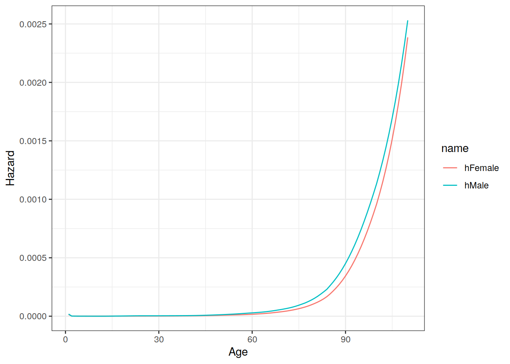
Grafico de probabilidades de sobrevivencia:
data.tot.long.s <- data.tot.long %>% filter(name == 'sMale' | name == 'sFemale')
ggplot(data = data.tot.long.s)+geom_line(mapping = aes(x = tm,y = value,col = name)) + theme_bw() + xlab('Age')+ylab('Hazard')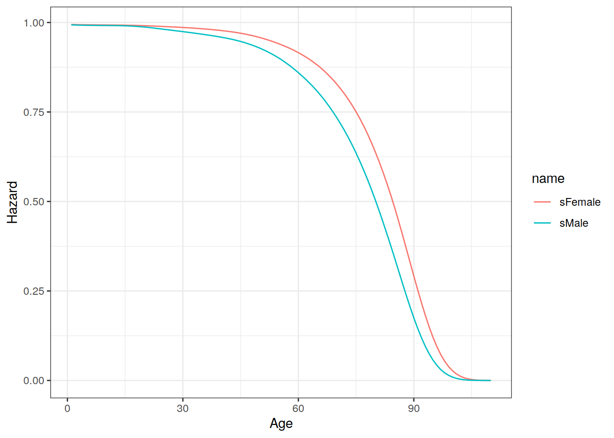